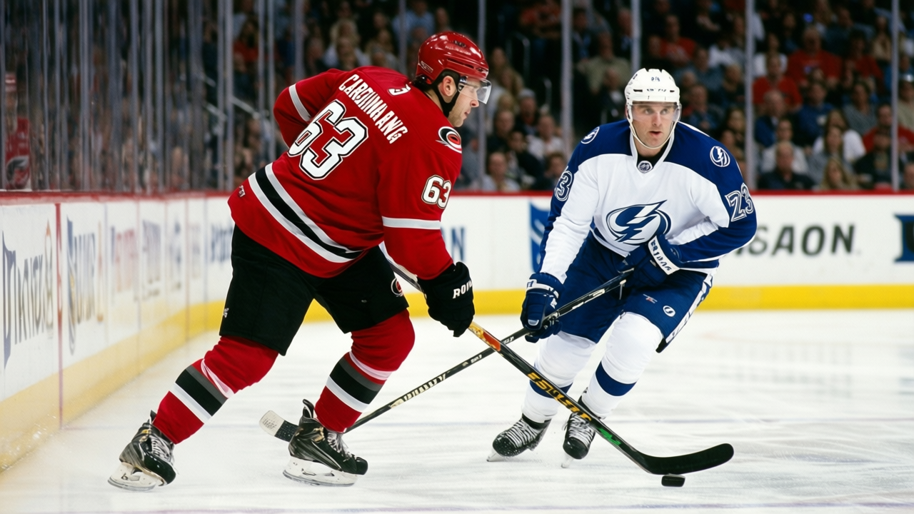

The Blaine Rankings, Week 9: Carolina has lost seven regulation games in 35, and it is first in the Southeast
The captain played 11. The leading scorer played 29. The Hurricanes are 49 points and on a three-game win streak, and nobody is writing about them.
 Howard BlaineSenior writer, The Blaine Rankings · The Hockey Gazette
Howard BlaineSenior writer, The Blaine Rankings · The Hockey Gazette
The  Carolina Hurricanes Hurricanes are 14-7-7, 49 points, first in the Southeast Division, on a three-game win streak. They have lost seven regulation games in 35. Only
Carolina Hurricanes Hurricanes are 14-7-7, 49 points, first in the Southeast Division, on a three-game win streak. They have lost seven regulation games in 35. Only  Toronto Maple Leafs, which has lost six in 36, has lost fewer in 60 minutes this season. Four points separate Carolina from Tampa Bay, and the division behind them is thin.
Toronto Maple Leafs, which has lost six in 36, has lost fewer in 60 minutes this season. Four points separate Carolina from Tampa Bay, and the division behind them is thin.
Rod Brind'Amour, the captain, has played 11 games. Jeff O'Neill, their second-best scorer, has played 29. In goal,  Kevin Weekes90 is 18-9-2 with two shutouts and a 3.19 goals against average. The leading scorer is a 23-year-old right wing drafted 212th overall in 1999, a seventh-round pick, who has 51 points and a Book grade of 77.
Kevin Weekes90 is 18-9-2 with two shutouts and a 3.19 goals against average. The leading scorer is a 23-year-old right wing drafted 212th overall in 1999, a seventh-round pick, who has 51 points and a Book grade of 77.
 Radim Vrbata79 is the player nobody has written about, and he is the reason Carolina is first.
Radim Vrbata79 is the player nobody has written about, and he is the reason Carolina is first.
The Vrbata problem
Vrbata's 51 points in 35 games put him 119-pace over 82 games. That is not a Hart candidate or an Art Ross contender, but it is enough to lead the Hurricanes, and his 22 goals are the most on the team. His overall grade is 77. His potential grade is 81. The Development Index has him at base: no movement up, no movement down. He is a top-nine winger on most clubs who happens to be the best option in Carolina.
That is how the Carolina Hurricanes payroll builds a division leader. At $55.96M, they are 9th in the league in spending. At $1.14M per point, they are 5th-best in efficiency. Sandis Ozolinsh is 35 years old, 44 points as a defenseman (5 goals, 39 assists), 103-pace. Steve Rucchin has 35 points, 82-pace, 78 overall. Hnat Domenichelli has 20 points, 47-pace, 73 overall.
What the seven losses mean
Carolina's seven regulation losses are the most important number on the standings line. In a division where  Tampa Bay Lightning has 11 regulation losses and
Tampa Bay Lightning has 11 regulation losses and  Washington Capitals has 12, the ability to avoid a regulation loss is the thing that separates a 49-point team from a 41-point team. The 7 overtime losses are the other side of the same coin: Carolina cannot lose in 60, but they can lose in 65.
Washington Capitals has 12, the ability to avoid a regulation loss is the thing that separates a 49-point team from a 41-point team. The 7 overtime losses are the other side of the same coin: Carolina cannot lose in 60, but they can lose in 65.
The overtime record this season is a coin flip. Seven losses is a lot, and they will also have seven overtime wins on the other side of the ledger (the regulation-win column displays 14; the hidden overtime-win column adds seven more to produce the 49 points). A 7-7 record in overtime is the profile of a team that is genuinely competitive in close games but has not found the one player who closes them. That player is supposed to be Brind'Amour, at 81 overall and a 134-point pace in the 11 games he has managed, and he is not in the lineup.
The other number is the road record. Carolina is 7-9 away from home, which is the 5th-worst road record among the 15 Eastern Conference clubs. They are 14-5 at the RBC Center, where they draw 16,488 a night at $80 a ticket.
The division picture
Tampa Bay Lightning is 17-11-3, 45 points, and the Lightning's cost-per-point is the lowest in the Southeast.  Vincent Lecavalier88 at 24 carries a 145 pace.
Vincent Lecavalier88 at 24 carries a 145 pace.  Cory Stillman82 has 40 assists.
Cory Stillman82 has 40 assists.  Nikolai Khabibulin90 has 31 games and a 3.26. Tampa Bay is a better team on paper and behind in the standings.
Nikolai Khabibulin90 has 31 games and a 3.26. Tampa Bay is a better team on paper and behind in the standings.
Washington Capitals is 16-12-5, 41 points, with  Jaromir Jagr83 at 73 points and
Jaromir Jagr83 at 73 points and  Peter Bondra80 still producing 57 in 30 games. They are one game behind Carolina for the second wild card.
Peter Bondra80 still producing 57 in 30 games. They are one game behind Carolina for the second wild card.
Carolina holds the division lead on regulation losses. That is the thesis: a team that refuses to lose in 60 minutes, even without its captain, will finish above a team that loses more often in regulation. I hold that thesis, and I will revisit it in April.
The prediction
Carolina wins the Southeast Division. They are 4 points ahead of Tampa Bay with the better regulation-loss column, and their overtime record is the one thing that keeps them from pulling further away. If they close two of those seven overtime losses, the gap is 8. The Christmas standings are the April standings until a team proves otherwise, and nobody has proved otherwise in this division yet.